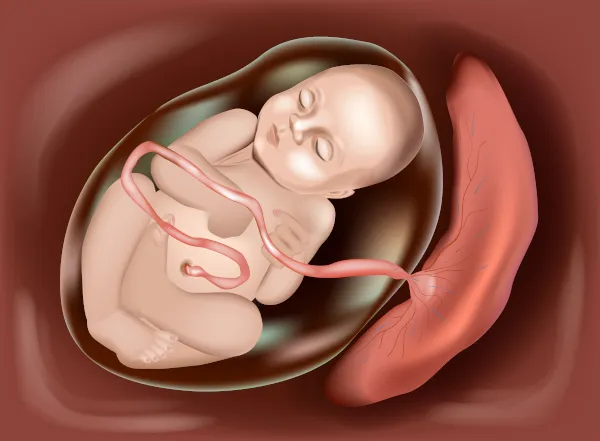
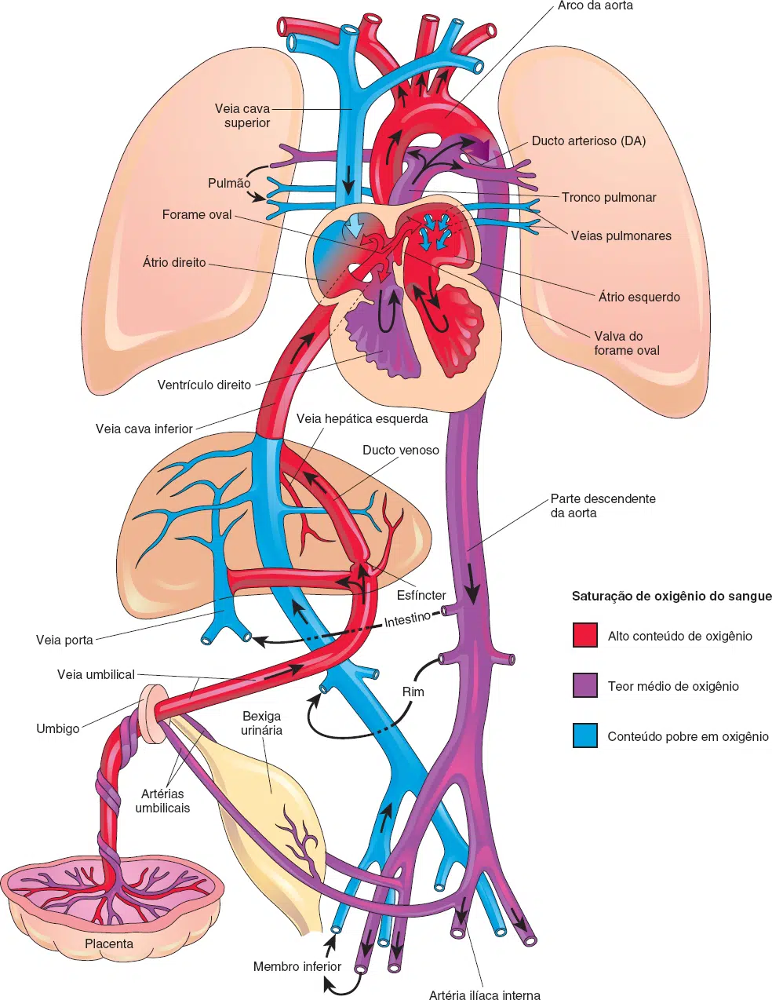
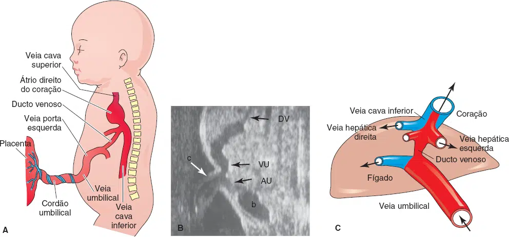
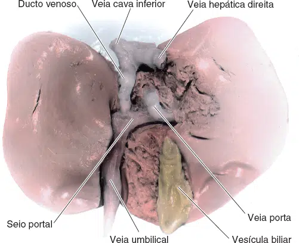
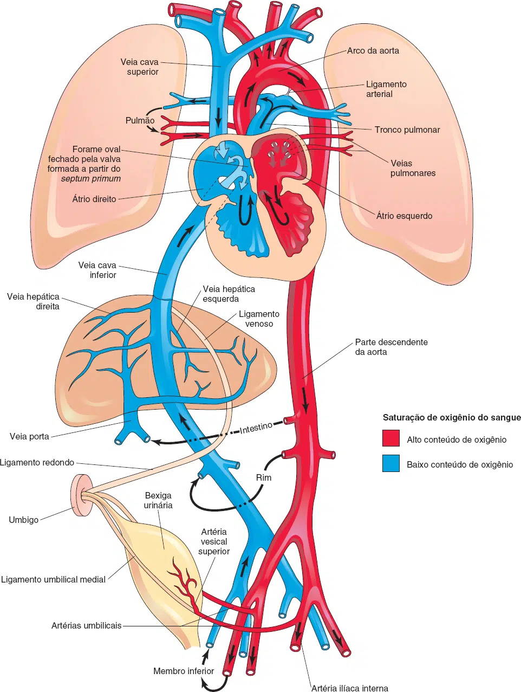
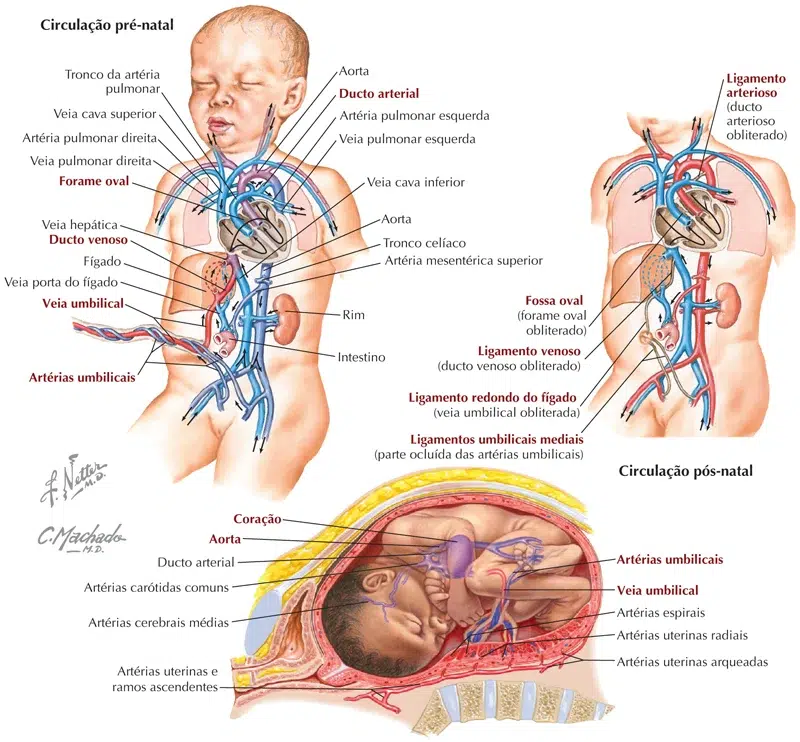

Durante a gravidez, o sistema circulatório fetal funciona de forma diferente:
O feto é conectado pelo cordão umbilical à placenta. Este é o órgão que se desenvolve e se implanta no útero da mãe durante a gravidez.
Por meio dos vasos sanguíneos do cordão umbilical, o feto obtém toda a nutrição e oxigênio necessários. O feto obtém suporte de vida da mãe por meio da placenta.
Os resíduos e o dióxido de carbono do feto são enviados de volta através do cordão umbilical e da placenta para a circulação da mãe para serem removidos.

O sistema circulatório fetal usa 3 derivações. São pequenas passagens que direcionam o sangue que precisa ser oxigenado. O objetivo dessas derivações é desviar a passagem do sangue pelos pulmões e fígado. Isso porque esses órgãos não funcionarão totalmente até depois do nascimento.
1 – A derivação que desvia dos pulmões é chamada de forame oval. Essa derivação move o sangue do átrio direito do coração para o átrio esquerdo.
2 – O ducto arterioso move o sangue da artéria pulmonar para a aorta.
3 – Oxigênio e nutrientes do sangue da mãe são enviados através da placenta para o feto. O sangue enriquecido flui através do cordão umbilical para o fígado e se divide em 3 ramos. O sangue então alcança a veia cava inferior. A maior parte deste sangue é enviada através do ducto venoso. Este também é um desvio que permite que o sangue altamente oxigenado desvie do fígado para a veia cava inferior e então para o átrio direito do coração. Uma pequena quantidade deste sangue vai direto para o fígado para dar a ele o oxigênio e os nutrientes de que ele precisa.
Os resíduos do sangue fetal são transferidos de volta através da placenta para o sangue da mãe.


A. Ilustração esquemática do trajeto da veia umbilical desde o cordão umbilical até o fígado. B. USG mostrando o cordão umbilical e o trajeto de seus vasos no embrião. b, bexiga; c, cordão umbilical; DV, ducto venoso; AU, artéria umbilical; VU, veia umbilical. C. Apresentação esquemática da relação entre o ducto venoso, a veia umbilical, as veias hepáticas e a veia cava inferior. O sangue oxigenado está em vermelho.

Dissecção da superfície visceral do fígado fetal. Aproximadamente 50% do sangue venoso umbilical contorna o fígado e junta-se à veia cava inferior por meio do ducto venoso.
Quando o sangue entra no átrio direito, a maior parte dele flui através do forame oval para o átrio esquerdo;
O sangue então passa para o ventrículo esquerdo e segue para a aorta;
Da aorta, o sangue é enviado para o próprio músculo cardíaco, cérebro e braços. Após circular por lá, o sangue retorna para o átrio direito do coração através da veia cava superior. Muito pouco desse sangue menos oxigenado se mistura com o sangue oxigenado. Em vez de voltar pelo forame oval, ele vai para o ventrículo direito;
Este sangue menos oxigenado é bombeado do ventrículo direito para a artéria pulmonar. Uma pequena quantidade de sangue continua para os pulmões. A maior parte deste sangue é desviada através do ducto arterioso para a parte descendente da aorta. Este sangue então entra nas artérias umbilicais e flui para a placenta.
Na placenta, dióxido de carbono e resíduos são liberados no sistema circulatório da mãe. Oxigênio e nutrientes do sangue da mãe são liberados no sangue do feto.
No nascimento, o cordão umbilical é clampeado e o bebê não recebe mais oxigênio e nutrientes da mãe.
Com as primeiras respirações da vida, os pulmões começam a se expandir.
À medida que os pulmões se expandem, os alvéolos nos pulmões são limpos de fluido. Um aumento na pressão arterial do bebê e uma grande redução nas pressões pulmonares reduzem a necessidade do ducto arterioso desviar o sangue.
Essas mudanças ajudam o shunt (termo utilizado para descrever o sangue que entra no leito arterial sistêmico sem passar pelas áreas ventiladas do pulmão) a se fechar.
Essas mudanças aumentam a pressão no átrio esquerdo do coração. Elas também diminuem a pressão no átrio direito. A mudança na pressão estimula o forame oval a fechar.
Ajustes circulatórios importantes ocorrem ao nascimento, quando cessa a circulação do sangue fetal pela placenta e os pulmões do recém-nascido se expandem e começam a funcionar.
Após o nascimento, o forame oval, o ducto arterioso, o ducto venoso e os vasos umbilicais deixam de ser necessários. O esfíncter no ducto venoso contrai-se para que todo o sangue que entra no fígado passe pelos sinusoides hepáticos.
A oclusão da circulação placentária provoca diminuição imediata na pressão sanguínea na VCI e no átrio direito.
A aeração dos pulmões ao nascimento está associada a:

